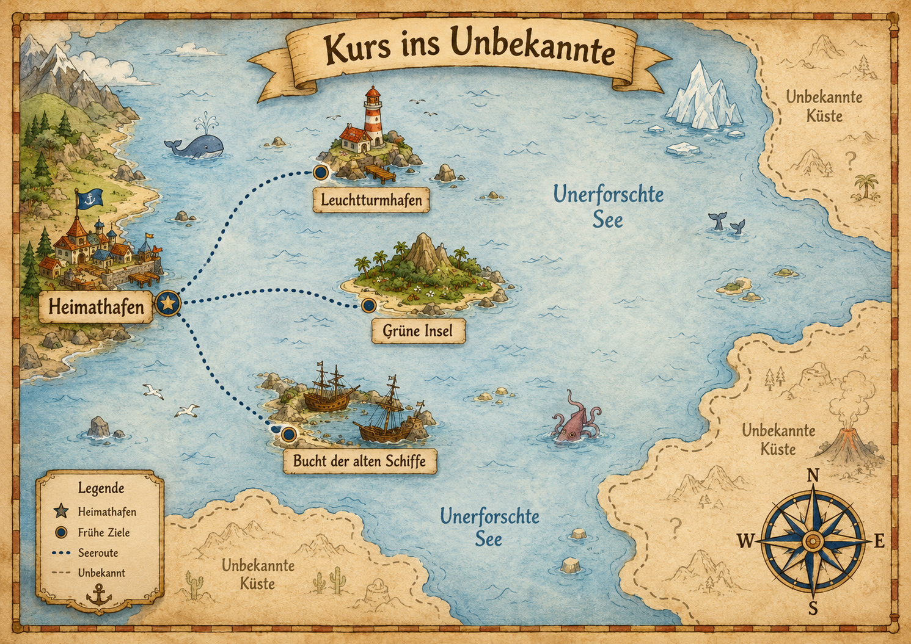
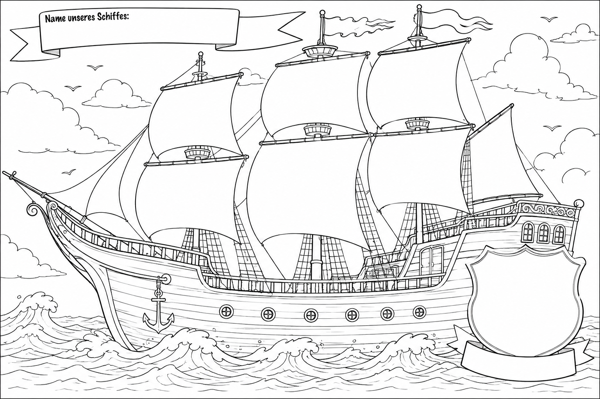
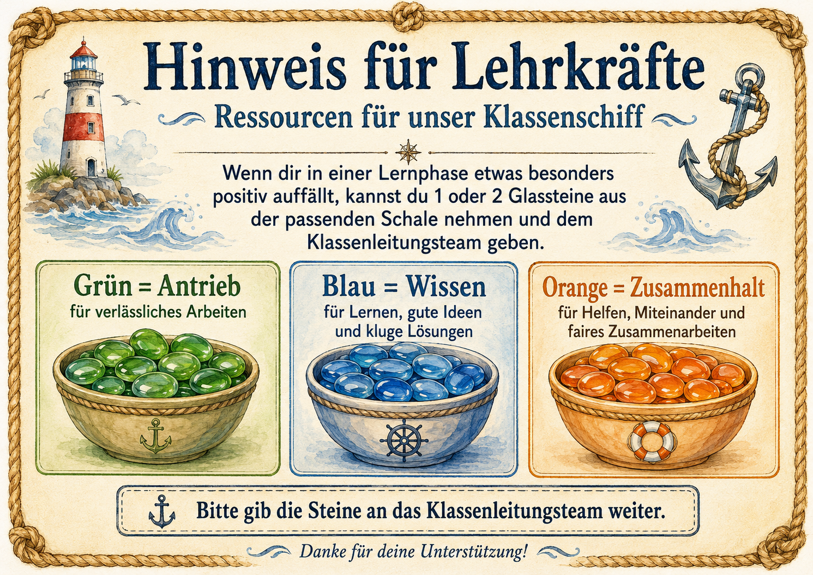
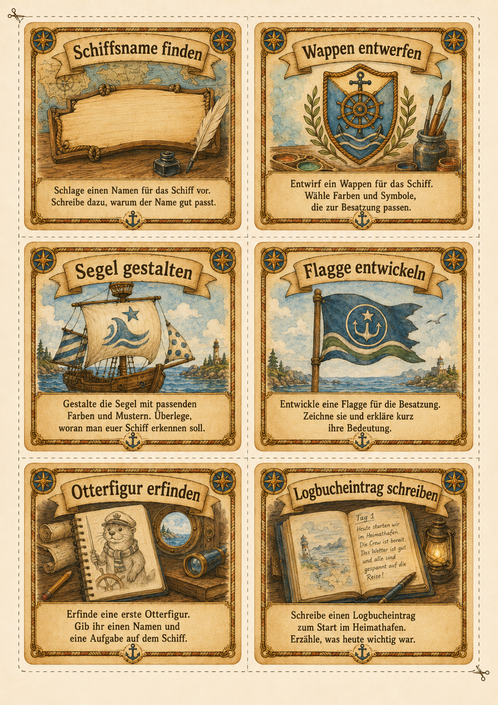
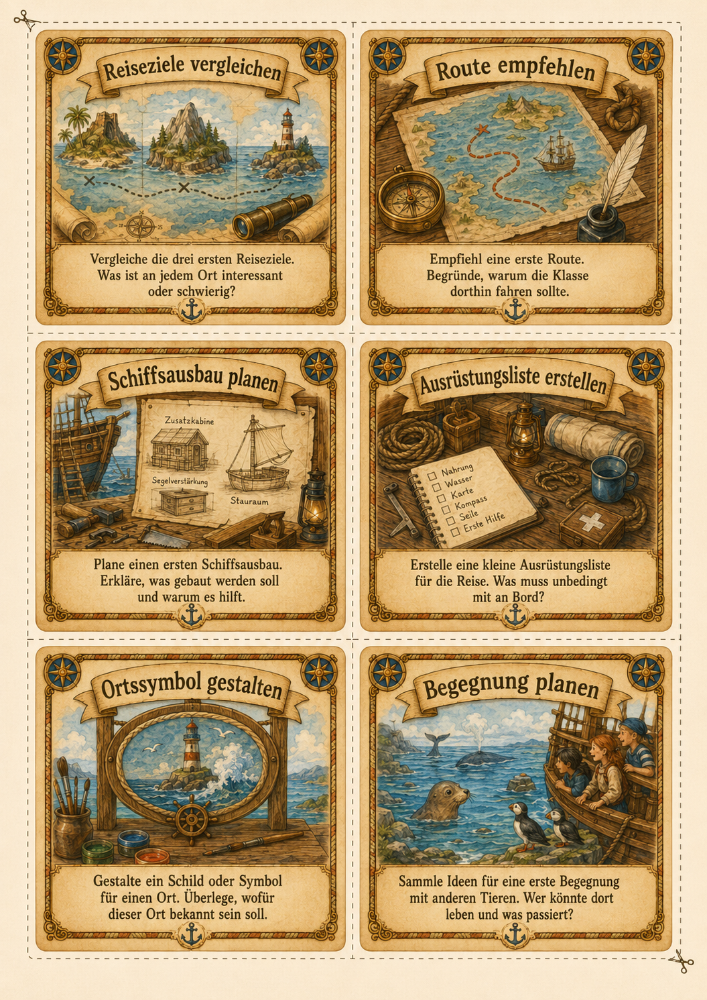

Unser gemeinsames Klassenabenteuer
auf hoher See
Tippt euch durch und seht, wie unsere Reise beginnt.

Noch ist es ein leeres Schiff. Es hat keinen Namen, leere Segel und ein leeres Wappen.
Das ändert sich bald — denn ihr seid die Besatzung. Ihr entscheidet, wie das Schiff heißt, welche Farben die Segel bekommen und wofür eure Mannschaft steht.
Unser Schiff fährt mit drei Arten von Energie. Wir sammeln sie gemeinsam — durch das, was wir im Unterricht tun.
für verlässliches Arbeiten
Ruhig anfangen, dranbleiben, Aufgaben fertig machen.
Bringt uns voran und auf neue Routen.
für Lernen und gute Ideen
Gut nachdenken, Fehler verbessern, Fragen stellen.
Hilft uns, Karten zu lesen und Rätsel zu lösen.
für Helfen und Miteinander
Sich helfen, fair streiten, zusammen arbeiten.
Brauchen wir für Expeditionen und Begegnungen.
Wichtig: Einmal gesammelte Energie wird nie wieder weggenommen. Wir kommen mal schneller, mal langsamer voran — aber niemand ist schuld.

Für jede Energie gibt es eine Schale mit Glassteinen: grün für Antrieb, blau für Wissen, orange für Zusammenhalt.
Wenn jemand etwas besonders gut macht — richtig verlässlich arbeitet, klug mitdenkt oder anderen hilft — legt eine Lehrkraft ein bis zwei Steine aus der passenden Schale in unseren gemeinsamen Vorrat.
Jede Woche dreht sich dieselbe Schleife — und unsere Reise kommt ein Stück weiter.
Wir lernen und arbeiten zusammen. Dabei sammeln wir Antrieb, Wissen und Zusammenhalt.
Wer seine Pflichtaufgaben fertig hat, darf am Abenteuer weiterbauen: zeichnen, planen, erfinden.
Einmal pro Woche entscheiden wir gemeinsam: Wohin reisen wir? Was bauen wir aus?
Auf der nächsten Seite spielen wir eine Beispielwoche einfach mal durch.
Wenn deine Pflichtaufgaben fertig sind, darfst du dir eine dieser Karten aussuchen. Für jede Stärke ist etwas dabei!


Aus all unseren Karten, Bildern und Entscheidungen entsteht zum Schuljahresende ein echtes Klassenbuch — eine Reise, die nur wir erlebt haben.